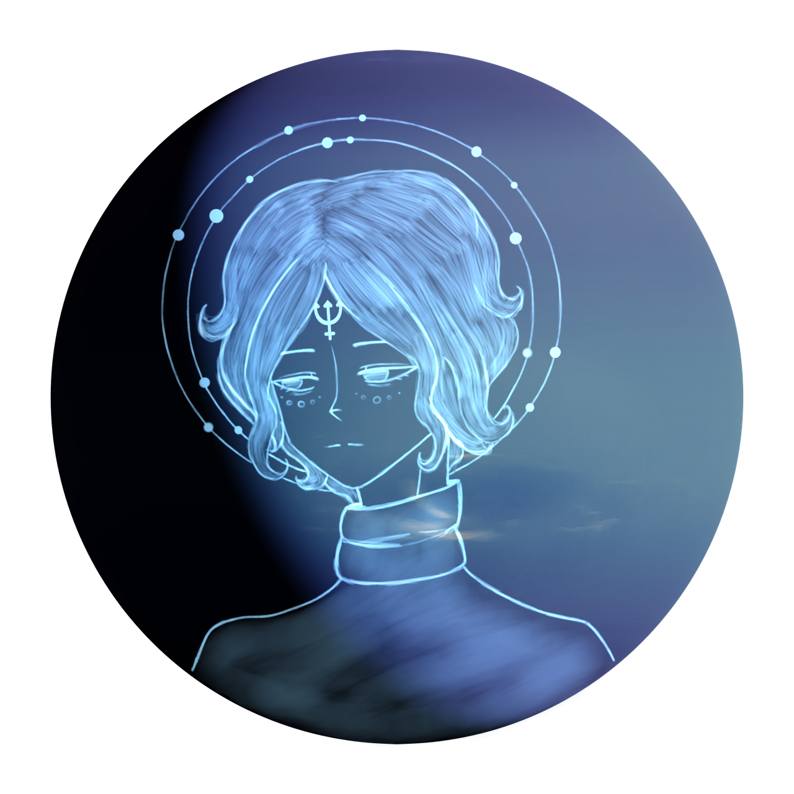
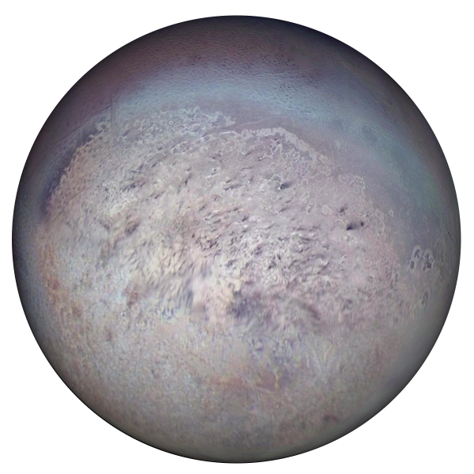
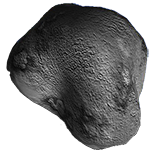
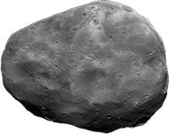
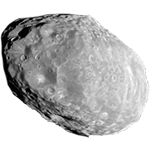
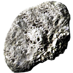

Восьмая по удалённости планета
Ледяной гигант - Нептун
Непту́н — Его масса превышает массу Земли в 17,2 раза и является третьей среди планет Солнечной системы, а по экваториальному диаметру Нептун занимает четвёртое место, превосходя Землю в 3,9 раза. Планета названа в честь Нептуна — римского бога морей. Обнаружен 23 сентября 1846 года, став первой планетой, открытой благодаря математическим расчётам. У Нептуна есть слабая и фрагментированная система колец, возможно, обнаруженная ещё в 1960-е годы, но достоверно подтверждённая «Вояджером-2» лишь в 1989 году.


Тритон
Трито́н — крупнейший спутник Нептуна, открытый астрономом Уильямом Ласселом 10 октября 1846 года. Единственный крупный спутник Солнечной системы с ретроградным движением по орбите.

Галатея
Галатея — внутренний спутник планеты Нептун. Названа по имени одной из нереид из греческой мифологии. Также обозначается как Нептун VI. Галатея была открыта по снимкам аппарата «Вояджер-2».

Деспина
Деспина — внутренний спутник планеты Нептун. Названа по имени нимфы из греческой мифологии. Также обозначается как Нептун V. Деспина была открыта по снимкам аппарата «Вояджер-2».

Таласса
Таласса — внутренний спутник планеты Нептун. Названа по имени богини моря из греческой мифологии. Также обозначается как Нептун IV. Таласса была открыта по снимкам аппарата «Вояджер-2».

Наяда
Наяда — внутренний спутник планеты Нептун. Образована от наяд, нимф источников, ручьёв и родников из греческой мифологии. Также обозначается как Нептун III. Открыта аппаратом «Вояджер-2».